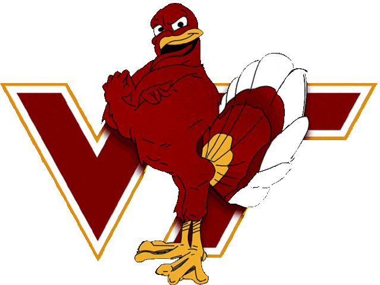

Hello, my name is Sean Stubbs. I was born and raised in Sterling, VA. I grew up with 3 brothers and sisters there, along with some pets as well.
I love playing baseball, ping pong and doing anything outdoors. I love to travel to different places, whether it be for sight-seeing or snowboarding in the winter.
I am a recent graduate from Virginia Tech (Go Hokies), and love to return during football seasons and the summer time.
A TV show I am currently watching is 'Better Call Saul', which is a prequel to the AMC series 'Breaking Bad'. The show covers the beginning stages of Saul Goodman's lawyering career, and also touches on other characters from the show.
My dream job is to work for an MLB team in a technical role, since I can't really work for an MLB team as a player.
